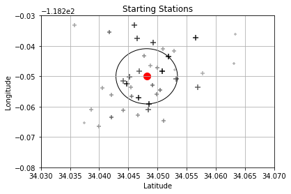

Interesting Graphic #3
The figure below shows a plot of the top 40 locations of all starting and ending BikeShare stations. This X's on this graph represent latitude and longitude coordinates, and their size/opacity represent how frequent the stations are used. The red dot on either plot represents latitude/longitude coordinates of the mean station. The circles on the plots have a center equal to the mean lat/long coordinates, and width/height equal to the mean standard dev of the lat/long coordinates. According to the enclosing circle, it is visually apparent that the most popular starting stations are relatively close to the mean station compared to the ending stations; hence, why the ending stations' enclosing circle is larger. This means rides are generally going from inner, closely located starting stations stations to outer, more spread outer stations.
